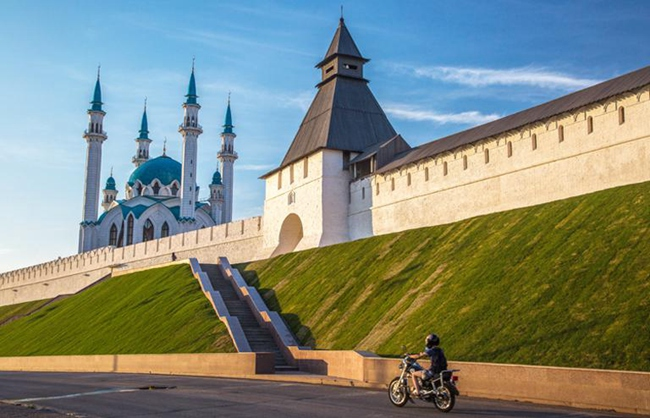
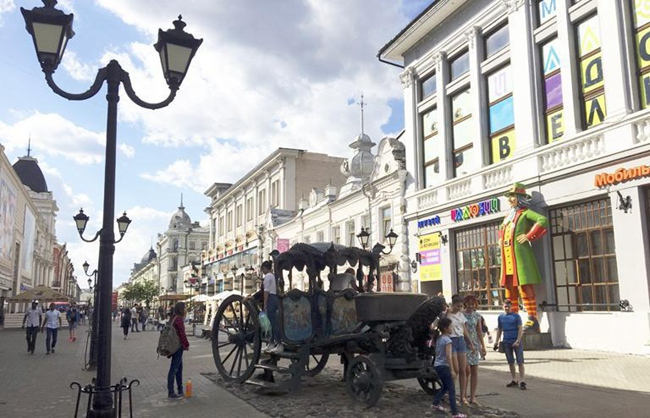
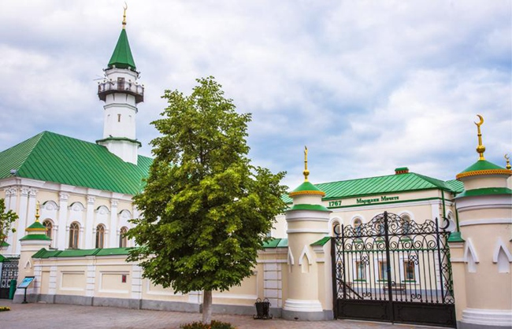
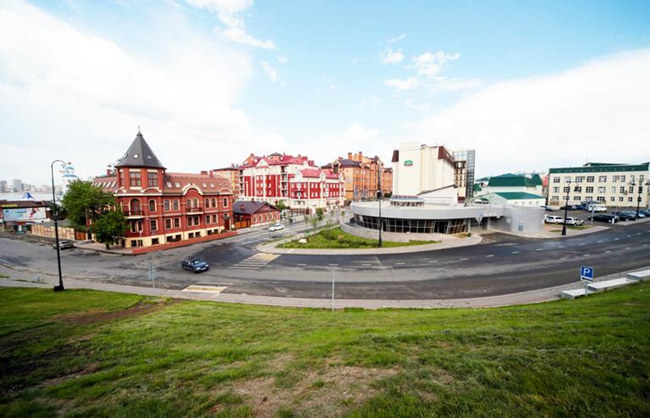
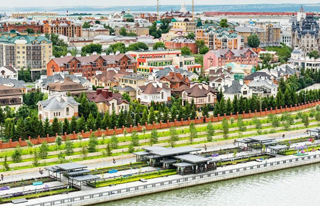
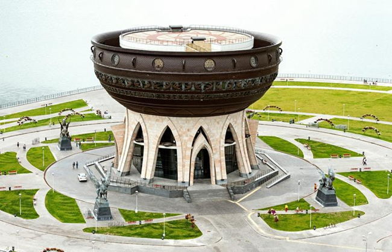
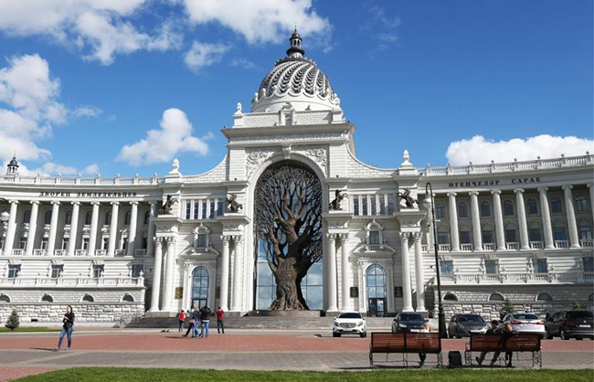

Восемь достопримечательностей Казани, которые обязательно стоит посетить
Казань, столица Республики Татарстан в Российской Федерации, является четвертым по величине туристическим городом России.Общее количество туристов в 2018 году превысило 3 миллиона, уступая только Москве, Санкт-Петербургу и Сочи. История Казани, многоэтнического и многоконфессионального города, накопленная за более чем 1000 лет, отражает ее славное настоящее. Пейзажи Казани с ее ярким летом и заснеженной зимой захватывают дух круглый год. Здесь можно прикоснуться к истории России и разнообразию цивилизаций, а также нескончаемый поток отечественных и иностранных туристов.
Как посетить главные достопримечательности Казани за 1-2 дня?
Кремль

(Кремль и мечеть Кул Шариф)
Кремль (внутренний город) — одна из главных достопримечательностей многих городов России. Казанский Кремль внесен в список наследия ЮНЕСКО. Здесь вы найдете Благовещенский собор, построенный в середине 16 века, огромную мечеть Кул-Шариф, загадочную башню Суюмбека, филиал Эрмитажа и Президентский дворец Республики Татарстан, который виден издалека. .
Боумен-стрит

(Боумен-стрит)
В отличие от пешеходных улиц в центрах других городов России, напоминающих Арбат (пешеходная улица в центре Москвы), казанская улица Баумана имеет свой неповторимый стиль. Хотя общая длина составляет всего два километра, на улице Баумана расположены Богоявленский собор, церковь Николая Ниского, театр Гончарова, Национальный банк Татарстана, Республика Татарстан. В городе много достопримечательностей и важных функциональных учреждений, таких как Академии наук и государственных универмагов. Кроме того, здесь есть гостиница «Шалябин Палас», «Татарский фуд-сити», частная резиденция Соломина-Смолина, типография в стиле структурализма, скульптура кареты Екатерины II и статуя казанского кота. Казанский кот Арабес известен своими «командировками» в Эрмитаж в Санкт-Петербурге. Арабрес и другие коты работали вместе, чтобы уничтожить крыс в Санкт-Петербурге и навести порядок в городе.
По улице Баумана можно пройти до площади Тьюки, а на другой стороне площади находится улица Санкт-Петербургская. Большие часы в начале Петербургской улицы, как один из символов города, всегда были лучшим выбором для посиделок с семьей и друзьями.。
Древняя Татарская слобода

(Мечеть Альмара Гани)
Если вы приедете в Казань, вам обязательно стоит взглянуть на восточный ритм этого города. Древняя татарская слобода (город) расположена на западном берегу озера Нижний Кабан, а улицу Каюмнасили можно назвать обязательной для посещения достопримечательностью. На этой улице можно увидеть множество мечетей и архитектурных памятников, таких как бывшая резиденция Шамили, вождя горцев Северного Кавказа, Бывшая резиденция бизнесмена XIX века Юнусова-Анаева и др. Кроме того, здесь есть различные старинные магазины и различные музеи, например, музей Шакимы.
Карл Маркс Штрассе

(Карл Маркс Штрассе)
Улица Карла Маркса когда-то была аристократической усадебной слободой Казани. Здесь можно увидеть Казанскую ратушу в стиле неоренессанса по проекту Колинского (представителя архитектора позднего русского классицизма), художественную школу по проекту Карла Муфко, Усадьба генерала Сандецкого, бывшего командующего Казанским военным округом, и расположенный в ней Музей пластических искусств Республики Татарстан.
Улицы вдоль Кремля

(Улицы вдоль Кремля)
Улицы вдоль Кремля были вновь открыты для посещения в 2015 году после реконструкции, их общая длина составляет 1,5 километра, начиная от Кремля и заканчивая Казанским национальным культурным центром.Вдоль улицы установлен каменный памятник «Холиат». «Холиат» — птица женского пола в мифологии Татарстана, символизирующая свободу.
Берега Кремля — прекрасное место для досуговых прогулок, здесь часто проводятся фестивали искусств, спортивные соревнования и другие мероприятия. Во время чемпионата мира по плаванию в Казани в 2015 году здесь проходили соревнования по прыжкам в воду с вышки.Зимой каток открыт для бесплатного посещения круглый год. Посетители также могут насладиться вкусной едой, любуясь городскими пейзажами в многочисленных небольших ресторанах вокруг.
Регистр брака «Большой горшок»

(Регистрация брака в форме котла)
Загс в форме котла расположен через дорогу от Кремля и открыт в 2013 году. По преданию, название города Казань произошло от котла, который кипел автоматически. Здание высотой 32 метра расположено на круглом полуострове и ночью нагревается пламенем при освещении световыми лучами. Внутреннее убранство здания выполнено в стиле периодов Волжско-Булгарского и Казанского ханства. Наверху здания расположена смотровая площадка, откуда можно увидеть Казанский Кремль и пейзажи побережья.
Посетители могут сфотографироваться со статуями дракона Жиле и снежного барса рядом со зданием в форме горшка. Тилетрон — символ города Казани и местного футбольного клуба «Рубин», легенда гласит, что он жил в древности недалеко от реки Кабан. Снежный барс – символ Республики Татарстан и местной хоккейной команды.
Крестьянский дворец

(Крестьянский дворец)
Крестьянский дворец расположен на Дворцовой площади, был построен и открыт в 2010 году, его стоимость составила 2 миллиарда рублей. Величественное здание выполнено в ярком венском стиле и сейчас является штаб-квартирой Министерства сельского хозяйства и других государственных учреждений.
Кремлевская улица

(Кремлевская улица)
Кремлевский проспект расположен рядом с Кремлем, где расположены Казанский университет, торговые комплексы «Александр» и «Чернояловский», а также Национальный музей Республики Татарстан (Дом Ушаковой). Бывшая резиденция Ушаковой спроектирована архитектором Карлом Муфко и является одним из символов Казани.